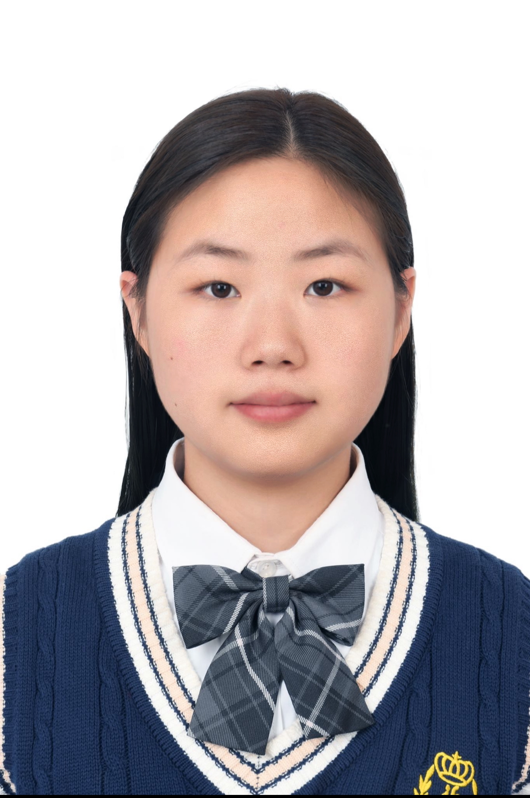

PI: Shanlin Ke
Shanlin Ke’s research focuses on the intersection of cancer, microbiota, and immunology. His work investigates microbial communities in cancer progression, the immune response to these microbes, and how microbiota can be leveraged for therapeutic applications. Shanlin's expertise includes microbial metagenomics, host-microbe interactions, cancer immunology, and computational analysis of microbial data.

PhD student: Yuru Zhang
Yuru Zhang is a first-year Ph.D. student in Industrial and Systems Engineering at The Ohio State University. Her research interests include machine learning, optimization, and their applications in energy systems and healthcare.